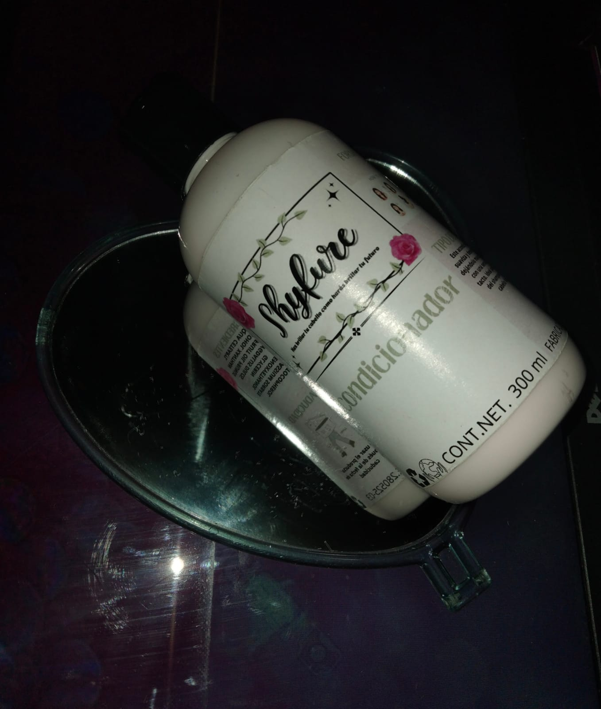

FOTOGRAFÍA
_______________________________________________________________________________________________________________________________________________________________________
Características del acondicionador
El acondicionador está hecho a base de ingredientes naturales como lo es la rosa, el cual es nuestro principal elemento
ya que es parte del logo de nuestra marca. El envase con dispensador es de 300 ml y su costo es de $140. Está hecho de plástico reutilizable, que puede volverse a usar para guardar algún otro líquido.
Es especial para cuero cabelludo de normal a graso, el acondicionador va después del shampoo, este ofrece mayor suavidad al cabello.
